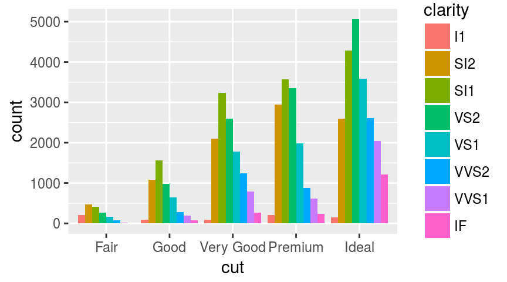
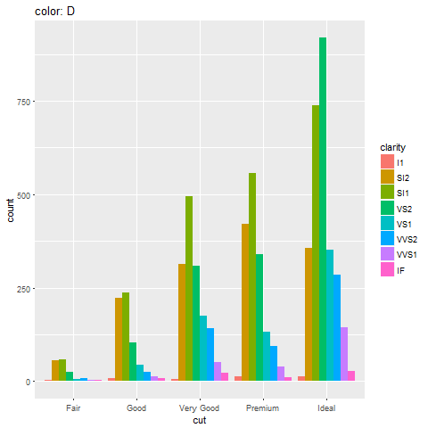
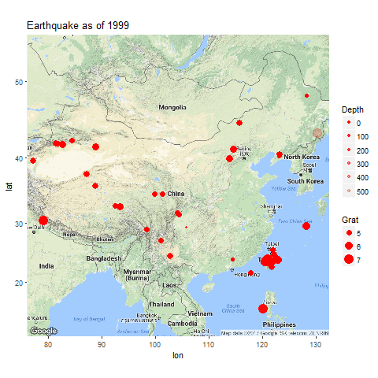

2017-04-27 22:23:09
目录
基础
静态图 vs 动态图、交互图
静态图
- 静态呈现
- 多用于文稿
library(ggplot2)
p <- ggplot(diamonds, aes(x=cut, fill=clarity)) +
geom_bar(position="dodge")
print(p)

动态/交互图
- 动态呈现/支持交互（点击、轻拂…）
- 多用于网页
library(plotly) ggplotly(p, width=400, height=300)
动态图
- 可通过animation包实现
- 动画呈现，但不支持交互
library(animation)
saveGIF({
dev.control("enable")
for (col in levels(diamonds$color)){
print(ggplot(
diamonds[diamonds$color==col, ],
aes(x=cut, fill=clarity)
) + geom_bar(position="dodge") +
ggtitle(paste("color:", col)))
}
}, "diamonds.gif")

交互图
- 交互图(htmlwidgets家族、ggvis等)是动态图中的特例，更便于用户挖掘信息
- 支持通过控件、图形元素交互（点击、轻拂、框选、…）
- 多用于网页
ggplotly(p, height=300)
animation
animation包
- 生成多个静态图片，再调用第三方工具压制为动画（gif、flash、pdf）
saveGIF系统要求:- ImageMagick (http://imagemagick.org) 或
- GraphicsMagick (http://www.graphicsmagick.org) 或
- LyX (http://www.lyx.org)
saveLatex系统要求: (PDF)LaTeXsaveSWF系统要求: SWF Tools (http://swftools.org)saveVideo系统要求:- FFmpeg (http://ffmpeg.org) 或
- avconv (https://libav.org/avconv.html)
用例
library(readr); library(ggmap)
earthquake <- read_csv(
"A03_07_interactive_files/files/earthquake.csv"
names(earthquake)[c(1, 3, 4, 5, 6)] <- c(
"Date", "lat", "long", "Depth", "Grat")
earthquake$Year <- as.integer(
format(earthquake[["Date"]], "%Y"))
earthquake$Grat <- as.numeric(
gsub("^M(.+)$", "\\1", earthquake[["Grat"]]))
saveGIF({
gg.map <- ggmap(get_googlemap("China", zoom=4))
for (yr in sort(unique(earthquake$Year))){
print(gg.map + geom_point(
aes(long, lat, size=Grat, alpha=Depth),
data=earthquake[earthquake$Year==yr,],
color='red') + scale_alpha(range=c(1, 0.2))+
ggtitle(paste("Earthquake as of", yr)))
}
}, "earthquake.gif")

htmlwidgets家族
htmlwidgets包

RStuio Inc. 出品的基建包
- 开发者贡献了庞大的htmlwidgets家族包: 基于htmlwidgets框架开发API，将第三方JavaScript可视化库移植到R
- 用户用R直接调用可视化JS库: 可嵌入Rmarkdown文档、Shiny应用
htmlwidgets框架
R/ |-- <fun>.R inst/ |-- htmlwidgets/ | |-- <pkg>.js | |-- <pkg>.yaml | |-- lib/ | | |-- <lib folder>/ | | | |-- <some>.js | | | |-- plugins/ | | | | |-- <some>.js
recharts包
- 作者: 本人
- 简介: 基于百度ECharts库，支持点、条、线、雷达、饼、力导、漏斗、和弦、事件河流图及地图。
- 安装: 不能直接通过CRAN。需要
devtools::install_github( "madlogos/recharts")
library(recharts)
totGDP <- data.table::dcast(
ChinaGDP, Prov~., sum, value.var='GDP')
ChinaGDP <- ChinaGDP[order(ChinaGDP$Year),]
echartr(ChinaGDP, Prov, GDP, Year,
type="map_china") %>%
setDataRange(splitNumber=0,
valueRange=range(totGDP[, 2]),
color=c('red','orange','yellow',
'limegreen','green')
) %>% setTheme(width=400, height=400) %>%
setTitle("China GDP by Provice, 2012-2014")
leaflet包
- 作者: Rstudio Inc.
- 简介: 基于Leaflet库，可绘制各类动态地图，并添加丰富的指示图层(标点、多边形、弹出框等)。
- 安装: CRAN
library(leaflet)
pal <- colorQuantile("YlOrRd", NULL, n = 4)
leaflet(quakes[1:100,]) %>%
addProviderTiles("Esri.WorldTopoMap") %>%
addCircleMarkers(~long, ~lat,
popup=~as.character(mag),
label=~as.character(mag),
color=~pal(mag))
plotly包
- 作者: Plotly
- 简介: 基于plotly库，可绘制各类动态图，并支持直接将ggplot2对象转换为plotly。
- 安装: CRAN
d <- diamonds[sample(nrow(diamonds), 500), ]
plot_ly(d, x = d$carat, y = d$price,
text = paste("Clarity: ", d$clarity),
mode = "markers", color = d$carat,
size = d$carat)
DataTables包
- 作者: Rstudio Inc.
- 简介: 基于DT库，可将数据框或矩阵绘制成交互表格，支持筛选、排序。
- 安装: CRAN
library(DT) datatable(iris, options=list(pageLength = 5))
wordcloud2包
- 作者: Dawei Lang
- 简介: 基于wordcloud2库，可绘制交互词云，且支持自定义图形词云等。
- 安装: CRAN
library(wordcloud2) wordcloud2(demoFreq[1:100,], size=0.5)
Highcharter包
- 作者: Joshua Kunst
- 简介: 基于Highcharts库，可绘制点、线、柱、地图、股价图等多种图形。商业用途需要申请许可。
- 安装: CRAN
library(magrittr)
library(highcharter)
highchart() %>%
hc_title(
text="Scatter chart with size and color") %>%
hc_add_series(
mtcars[, c("wt", "mpg","drat", "hp")],
type="scatter",
mapping=hcaes(wt, mpg, size=drat, color=hp))
dygraphs包
- 作者: Rstudio Inc.
- 简介: 基于dygraphs库，用于绘制各类时间序列图，支持缩放、高亮等交互。
- 安装: CRAN
library(dygraphs) lungDeaths <- cbind(mdeaths, fdeaths) dygraph(lungDeaths)
visNetwork包
- 作者: datastorm-open
- 简介: 基于vis.js库，可绘制多种交互网络图。
- 安装: CRAN
edges <- data.frame(
from = sample(1:10,8), to = sample(1:10, 8),
label = paste("Edge", 1:8),
length = c(100,500), width = c(4,1),
arrows = c("to", "from", "middle",
"middle;to"),
dashes = c(TRUE, FALSE), title = paste("Edge", 1:8),
smooth = c(FALSE, TRUE),
shadow = c(FALSE, TRUE, FALSE, TRUE))
nodes <- data.frame(id = 1:10,
group = c("A", "B"))
library(visNetwork)
visNetwork(nodes, edges)
networkD3包
- 作者: Christopher Gandrud
- 简介: 基于D3.js库，可绘制多种交互网络图。
- 安装: CRAN
library(networkD3)
data(MisLinks, MisNodes)
forceNetwork(
Links = MisLinks, Nodes = MisNodes,
Source = "source", Target = "target",
Value = "value", NodeID = "name",
Group = "group", opacity = 0.4)
d3heatmap包
- 作者: Rstudio Inc.
- 简介: 基于D3.js库，可绘制多种交互热力图。
- 安装: CRAN
library(d3heatmap)
d3heatmap(mtcars, scale = "column",
colors = "Spectral")
threejs包
- 作者: B. W. Lewis
- 简介: 基于three.js库，可绘制3D散点图、3D球图等。
- 安装: CRAN
library("threejs")
library(maps)
earth <- paste0("A03_07_interactive_files/",
"figure-html/world.topo.bathy.jpg")
cities <- world.cities[order(world.cities$pop,
decreasing=TRUE)[1:1000],]
value <- 100 * cities$pop / max(cities$pop)
col <- colorRampPalette(c("red", "gold"))(
10)[floor(10 * value/100) + 1]
globejs(img=earth, bg="white", emissive="#aaaacc",
lat=cities$lat, long=cities$long, value=value,
color=col, atmosphere=TRUE)
DiagrammeR包
- 作者: Richard Iannone
- 简介: 基于d3.js + viz.js + mermaid.js库，可绘制流程图、关系图等。
- 安装: CRAN
library(DiagrammeR)
library(magrittr)
mermaid("
graph TD
A(Rounded)-->B[Rectangular]
B-->C{A Rhombus}
C-->D[Rectangle One]
C-->E[Rectangle Two]
")
rbokeh包
- 作者: Bokeh
- 简介: 基于bokeh库，可绘制多种交互图。
- 安装: CRAN
library(rbokeh) z <- lm(dist ~ speed, data = cars) p <- figure(width = 400, height = 400) %>% ly_points(cars, hover = cars) %>% ly_lines(lowess(cars), legend = "lowess") %>% ly_abline(z, type = 2, legend = "lm") p
rCharts
简介
rPlot: 常用交互图
library(rCharts); library(knitr)
hair_eye = as.data.frame(HairEyeColor)
r1 <- rPlot(Freq ~ Hair | Eye, color = 'Eye', data = hair_eye, type = 'bar')
r1$show("iframesrc")
mPlot: 常用交互图
data(economics, package = "ggplot2")
econ <- transform(economics, date = as.character(date))
m1 <- mPlot(x = "date", y = c("psavert", "uempmed"), type = "Line", data = econ)
m1$set(pointSize = 0, lineWidth = 1)
m1$show("iframesrc")
nPlot: d3.js交互图
hair_eye_male <- subset(as.data.frame(HairEyeColor), Sex == "Male") n1 <- nPlot(Freq ~ Hair, group = "Eye", data = hair_eye_male, type = "multiBarChart") n1$print(n1$params$dom, include_assets=TRUE)
xPlot: 常用交互图
uspexp <- reshape2::melt(USPersonalExpenditure)
x1 <- xPlot(value ~ Var2, group="Var1", data = uspexp, type = "line-dotted")
x1$show('iframesrc')
hPlot: 常用交互图
h1 <- hPlot(x = "Wr.Hnd", y = "NW.Hnd", data = MASS::survey,
type = c("line", "bubble", "scatter"), group = "Clap", size = "Age")
h1$show('iframesrc')
Leaflet: 交互地图
map3 <- Leaflet$new()
map3$setView(c(51.505, -0.09), zoom = 13)
map3$marker(c(51.5, -0.09), bindPopup = "<p> Hi. I am a popup </p>")
map3$marker(c(51.495, -0.083), bindPopup = "<p> Hi. I am another popup </p>")
map3$show('iframesrc')
Rickshaw: 常用交互图
usp <- reshape2::melt(USPersonalExpenditure)
usp$Var2 <- as.numeric(as.POSIXct(paste0(usp$Var2, "-01-01")))
p4 <- Rickshaw$new(); p4$layer(value ~ Var2, group = "Var1", data = usp, type = "area")
p4$set(slider = TRUE, height = 350); p4$show('iframesrc')
其他
ggiraph包
- 作者: David Gohel
- 简介: 基于d3.js库，可使用ggplot2语法生成SVG交互图。
- 安装: CRAN
library(maps); library(ggiraph)
crimes <- data.frame(state = tolower(
rownames(USArrests)), USArrests)
states_ <- sprintf("<p>%s</p>",
as.character(crimes$state) )
table_ <- paste0("<table><tr><td>UrbanPop</td>",
sprintf("<td>%.0f</td>", crimes$UrbanPop),
"</tr><tr>", "<td>Assault</td>",
sprintf("<td>%.0f</td>", crimes$Assault),
"</tr></table>")
onclick <- sprintf("window.open(\"%s%s\")",
"http://en.wikipedia.org/wiki/",
as.character(crimes$state))
crimes$labs <- paste0(states_, table_)
crimes$onclick <- onclick
states_map <- map_data("state")
gg_map <- ggplot(crimes, aes(map_id = state)) +
geom_map_interactive(aes(
fill = Murder, tooltip = labs,
data_id = state, onclick = onclick),
map = states_map) + coord_map() +
expand_limits(x = states_map$long,
y = states_map$lat)
ggiraph(code = print(gg_map))
ggvis包
- 作者: RStudio Inc.
- 简介: 基于vega库，借鉴ggplot2语法和shiny框架（必须），生成SVG交互图。
- 安装: CRAN
library(ggvis)
mtcars %>%
ggvis(~wt, ~mpg) %>%
layer_points(
fill = ~factor(cyl),
size := input_slider(100, 1000, value = 100)) %>%
layer_smooths(span = input_slider(0.5, 1, value = 1))
googleVis包: Google Charts库的R语言接口
- 作者: Gesmann Markus
- 安装: CRAN
library(googleVis) op <- options(gvis.plot.tag='chart') Geo <- gvisGeoChart(Exports, locationvar='Country', colorvar='Profit', options=list(height=300, width=500)) Tbl <- gvisTable(Exports, options=list(height=300, width=200)) plot(gvisMerge(Geo, Tbl, horizontal=TRUE))
|
|
|
Thank you!